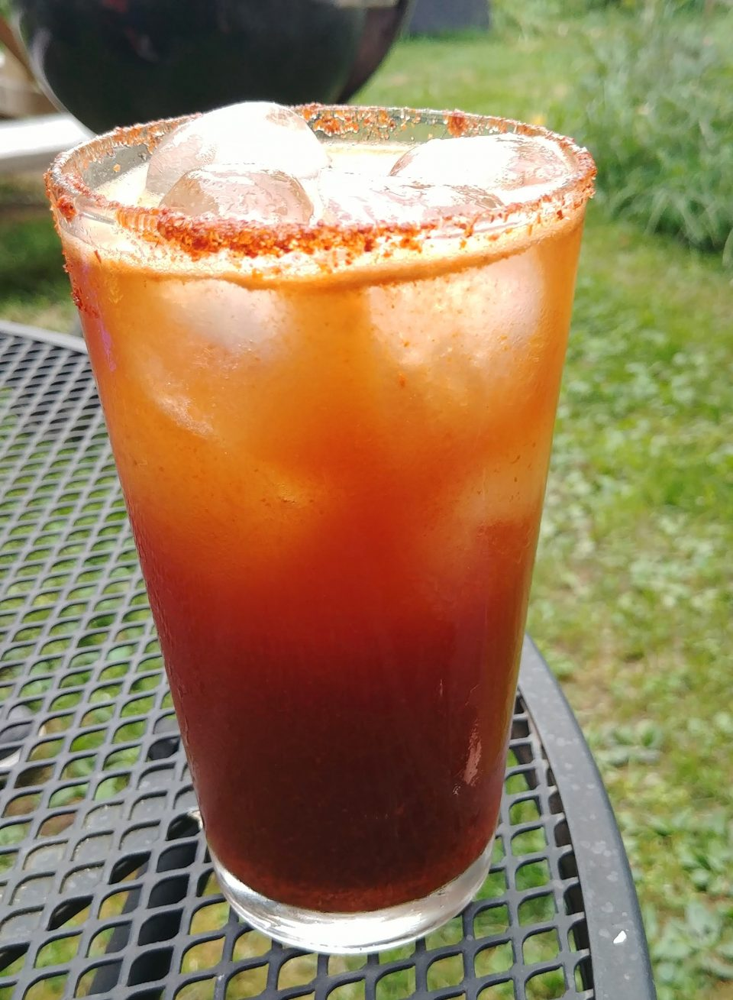

One Beer

Description
One Beer is a Michelada made with a blend of spices and a pilsner beer.
It is inspired by my personal favorite song off of MM...FOOD.
Ingredients
- Tajin blend
- 2 ounces fresh juice from 2 limes, half a juiced lime for the rim
- 2 teaspoons hot sauce, preferably a Mexican-style brand like Valentina
- 1 teaspoon Worcestershire sauce
- 1 teaspoon Maggi sauce
- 1 12-ounce can or bottle of pilsner or light Mexican beer(Modelo, Pacifico, Tecate, Victoria)
Steps
- Pour Tajin into a small shallow dish in an even layer.
- Rub a pint glasses rim with the cut side of the juiced half-lime, then dip the glass into the dish to salt the rim.
- Set glass right side up and fill with lime juice, hot sauce, Worchestershire, and Maggi sauce.
- Add ice and fill to the top with beer. Stir gently if needed.
- Top off with beer as you go to finish up. Cheers!
Back to Home